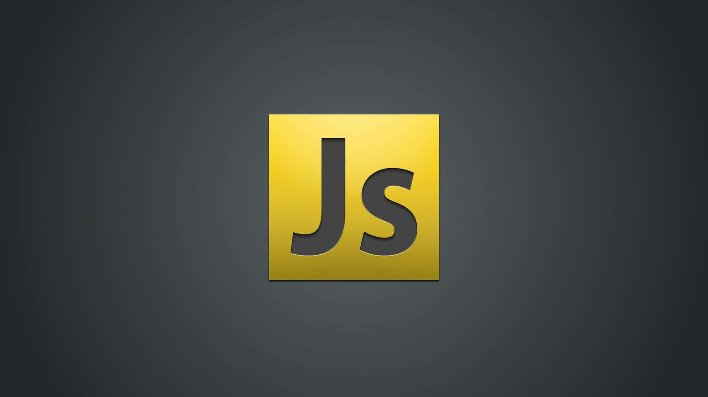
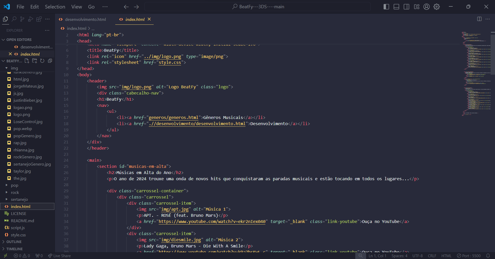
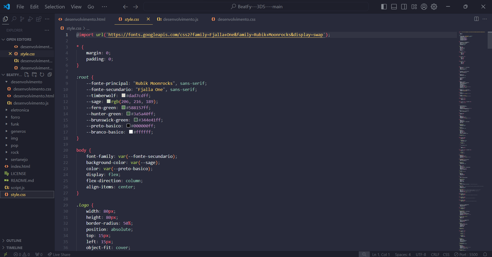
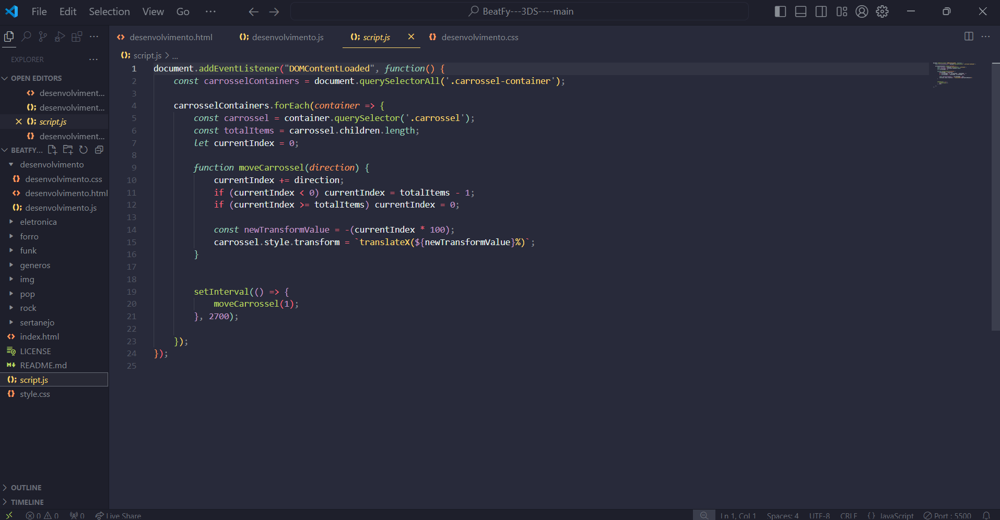

Linguagens e Tecnologias Utilizadas
O projeto BeatFy foi desenvolvido utilizando uma variedade de tecnologias para criar uma plataforma dinâmica e responsiva. As principais linguagens e ferramentas utilizadas incluem:

HTML5
Estrutura básica do site, permitindo uma ótima semântica e acessibilidade.

CSS3
Estilo visual da plataforma, com uso de animações e transições para uma experiência interativa.

JavaScript
Interatividade dinâmica, como carrosséis e carregamento de conteúdo assíncrono.
Ferramentas e Tecnologias Utilizadas

HTML5 - Estrutura de Conteúdo

CSS3 - Estilização Visual

JavaScript - Interatividade